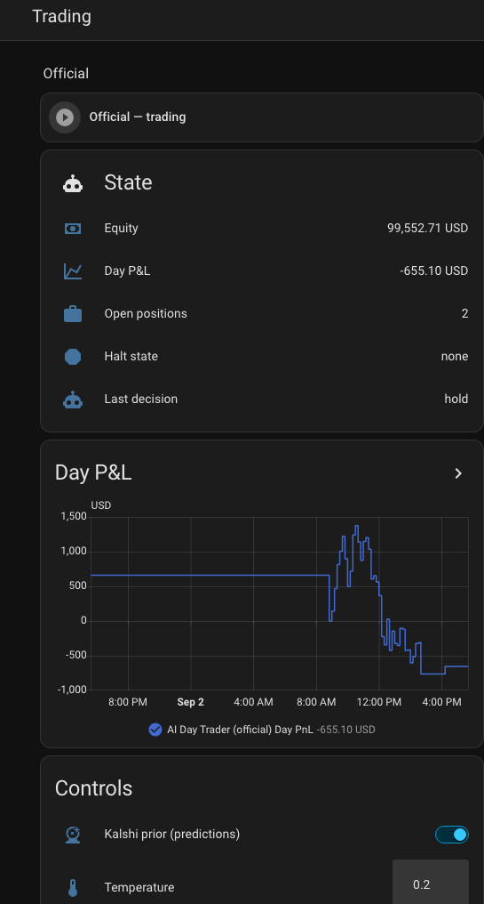
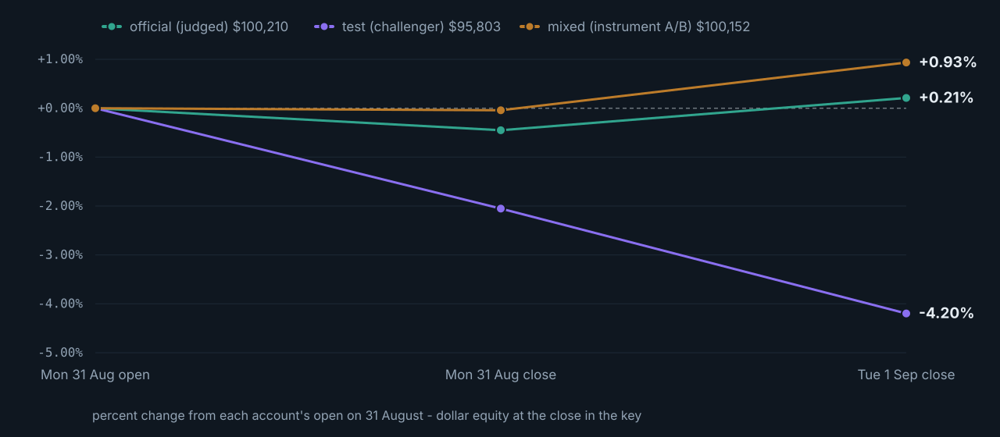

Team RazorsEdge
long premium, short leash
An autonomous options agent on Alpaca's MCP server. An auto belay catches a climber with nobody holding the other end. Here the brake is code.
Buy defined-risk, short-dated options premium when an open model can name a reason — and let deterministic code size it, stop it, and close it.
Defined risk
Long premium only. The worst case is the premium paid, known before entry — which is what lets every guardrail be a flat number.
Division of labour
The model forms a directional view from evidence. It never touches an order. Open model proposes; code disposes.
The model gets one box. Its proposals and code's own exit sells pass the same gate.
We spent three days sure the free feed carried none. It was wrong.
From Alpaca
IV and the full Greeks on 5,721 of 6,114 contracts in today's chain — one vendor surface, so a strike's put and call deltas agree.
Black-Scholes backstop
A bisection IV solve covers the ~6% too thin to price. Every contract carries
greeks_source, so the model knows which numbers are rough.
One API page is 500 contracts. On SPY, that is three days.
| before | now | |
|---|---|---|
| SPY chain | 500 contracts, 1 page, to 3 DTE | 2,912 contracts, 3 pages, to 45 DTE |
| NVDA menu | 12 contracts, all one strike | at-the-money and ~0.40 delta, three expiries, both sides |
Coverage is journaled each cycle, so a truncated chain is loud rather than silent.
SPY prior close 7,712, median 7,688 (-0.31%); P(above) 0.293; volume 756 -> shown QQQ prior close 29,433, median 29,450 (+0.06%); P(above) 0.514; volume 45 -> withheld
Two crowds
Kalshi's index-close market and the option chain's own implied odds. A prior to weigh, not a signal to copy — no code acts on it.
Knowing when to ignore it
A barely-traded market quotes every bucket just as confidently. Volume and entropy gates withheld QQQ, with the reason.
A prior nobody scores is decoration. Brier score, nightly, against what the market actually did.
| Tue Sep 1, judged account | Brier | |
|---|---|---|
| Kalshi index-close market | 0.004 | confident, and right |
| The option chain's own odds | 0.008 | agreed, less sharply |
| Priors the gate withheld | 0.006 | shadow-graded: the gate discarded nothing good |
A coin flip scores 0.25. One day, and a directional one — the point is that the inputs are graded at all.
research: get_bars({'symbol': 'SPY', 'timeframe': '15Min'}) -> 3334 chars
research: get_news({'symbols': 'NVDA', 'limit': 5}) -> 1770 chars
model output: [{"symbol":"NVDA260902P00220000","side":"buy","qty":10,
"reason":"NVDA in a clear intraday downtrend (225 -> 218.6); the 220 put
with 4 DTE, delta -0.58, aligns with the bearish momentum"}]
Four read-only tools, six calls at most, every one journaled. Nothing that places an order is reachable.
| Per proposal | whitelist · ≤ $5,000 per position · ≤ 4 positions · ≤ 10 contracts · 2–45 DTE on entries · entries 09:45–15:15 ET |
|---|---|
| Resting orders | an unfilled buy counts as held, and the next cycle cancels it |
| Before the model | close on expiry day · stop −40% · take-profit +60% |
| Per day | 2% loss → flatten and halt · HALT file is a global kill switch |
REJECTED buy 12 SPY260904C00775000: qty 12 exceeds max_contracts_per_order 10
bot.wpmccormick.pw — the journal streamed to a browser, published through a Cloudflare tunnel. No VPN, nothing to install. It found four bugs in two days; none was a failing test.
| #174 | the feed cut the model's reasoning mid-word |
|---|---|
| #170 | closing a +$1,340 winner, it named a neighbouring strike, three cycles running |
| #171 | an unfilled limit sat invisible; the same thesis was bought again next door |
| #173 | a ten-minute-old position proposed for exit — every number it cited had moved in its favour |
| 735 tests, 2s | every one runs with no API keys and no network |
|---|---|
| Only Docker needed | tests, a full dry-run cycle, the docs site |
| Rehearse any time | --dry-run prints orders instead of sending; --force skips the market gates |
| No deploy needed | override.py — allowlisted knobs, hard caps stay git-only, all of it expires at the close |
Dozens of those tests exist because something broke. Each incident ends as a test.
eod_review→
round trips · rejections by rule · Brier→
a second model's read→
one change→
override or config PR→
deployed before the open
The critique comes from a model that did not trade the day. 132 PRs, 113 deploys, in seven days.
run_cycle.py --account official run_cycle.py --account test --config config-test.yaml run_cycle.py --account mixed --config config-variants/mixed.yaml
Three live accounts
Same box, same ten-minute cadence, same market. Four days is no backtest, and the free feed has no historical options data.
One deliberate difference each
test swaps the model and enables research and learning. mixed
differs by exactly one key. The winner is promoted by pull request.

Operator
Kill switch and knobs.
Team
A read-only dashboard — Home Assistant has no per-entity permissions, so the separation has to be the dashboard.
Phone
Problems only. A fill sends nothing; silence does — no cycle for 25 minutes.

Judged account Mon open → Thu close: $___ → $___ (__%) · __ round trips · what didn't work: __
Promote what the challengers proved
Research tools, the prediction-market prior, the learning loop.
Multi-leg spreads
Once the gates cover assignment risk.
github.com/bill-mccormick-dg/alpaca-hackathon · MIT
Thanks to Alpaca, lablab.ai and Featherless AI.